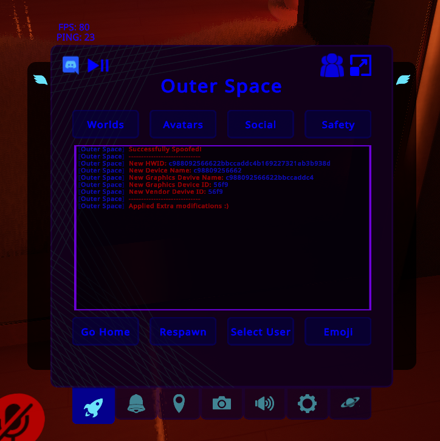

<html>
</html>
<head>

<link href="css/style.css" rel="stylesheet" />
<link rel="stylesheet" href="css/flipcardsgallery.css">
<link href="css/style2.css" rel="stylesheet" />
<link href="css/animate.css" rel="stylesheet" />
<script type="text/javascript" src="js/jquery.min.js"></script>
<script type="text/javascript" src="js/BlockInspect.js"></script>
<script src="js/title.js"></script>

</head>

<div id="bg">
<script type="text/javascript" src="js/particles.min.js"></script>
<script type="text/javascript" src="js/config.js"></script>

<body>

<div id="Center">
<div class="animated fadeInLeft">
<div class="page">
    <pre>$ <a target="_self" href="index.html">Home</a> $</pre>
</div>

<div class="head">Outer Space client</div>

<div class="about">
    <p>-programmeertaal: <a href="https://en.wikipedia.org/wiki/C_Sharp_(programming_language)">C#</a></p>               
    <p>-Het gebruik van deze mod zorgt er voor dat je een voordeel boven de normale gameplay hebt, om het spel gemakkelijker te maken. Ik heb deze mod gemaakt voor het modificeren van de IL2CPP-versie van spel. </p>

<div class="head">Backend</div>
    <p>-Ik heb voor deze mod gebruik gemaakt van een apache server. Deze apache server werd gebruikt voor het ontvangen van requests.</p>
    <p>-De volledige mod is geprogrammeerd in C#.</p>

</div>



</div>
</div>

</body>


